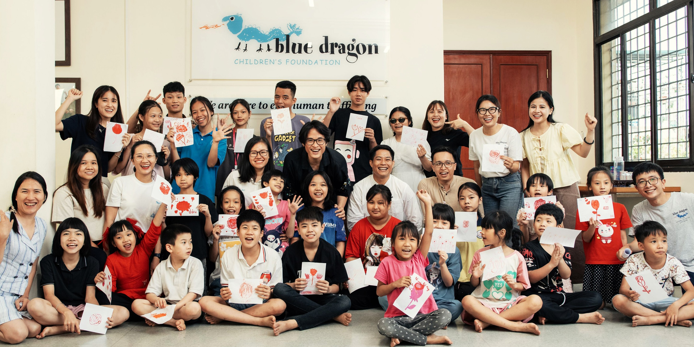
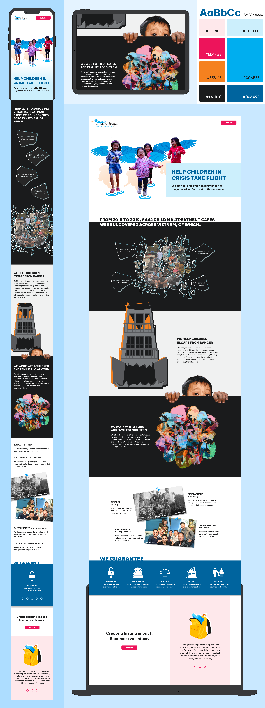
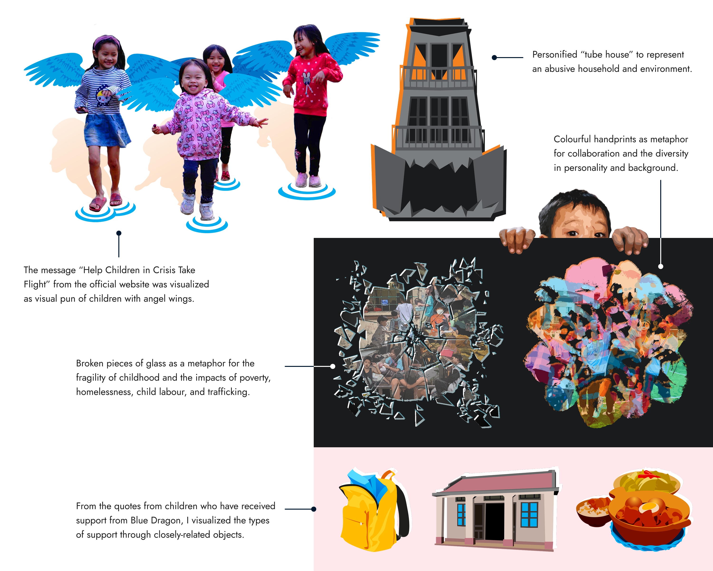
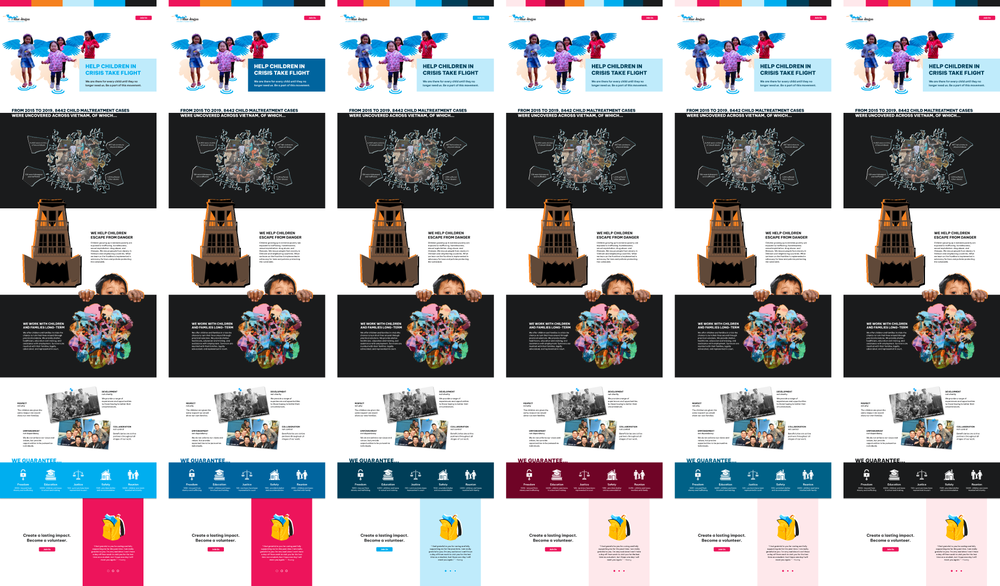

A persuasive landing page for Blue Dragon Children's Foundation

Overview
Blue Dragon Children's Foundation is a Vietnam-based NGO helping children and families in crisis. They work directly with high-risk communities, host events to raise funds and awareness, and rescue children from trafficking and abuse. This is an independent project to design a persuasive landing page to encourage viewers to become a volunteer and get involved in Blue Dragon's activities.
Tools
Figma, Adobe Illustrator, Photoshop
Duration
Feb – Mar 2023 (5 weeks)
Challenge
How might we utilize visual rhetoric to design a landing page that effectively encourages viewers to get involved with Blue Dragon's activities?
Blue Dragon Children's Foundation supports children and families in Vietnam located in high-risk communities or crises such as homelessness, abuse, extreme poverty, etc. The organization advocates for survivors and high-risk youths to ensure that they are not forced into dangerous circumstances. They work to prevent abuse and homelessness and provide opportunities for employment, shelter, and education. The foundation's homepage serves as its landing page and contains different types of content and call-to-actions, the variety of which can distract viewers.

Solution
A separate, focused landing page more effectively conveys Blue Dragon's key activities and impact and encourages the audience to get involved by becoming a volunteer.

Process
With information on the foundation's activities, I outlined a rough content structure leading up to the call-to-action. The test audience found key information unclear at first.
I roughly blocked out individual sections and where images and texts should be. This page will highlight the current situation, then the organization's activities, values, impacts, and finally encourage viewers to become a volunteer. During review sessions, I was advised to shorten the paragraphs and highlight the arguments and key information more clearly. Different arguments could be more distinctively separated. Keeping the information to three main arguments would strengthen the flow.

I leveraged visual rhetorical tropes to strengthen arguments.
Images from the organization's website and social media pages were collected as visual inspirations and possible assets—all photographs used in this project, including those used in a collage, were sourced from Blue Dragon's public pages. Visual elements were created using Adobe Illustrator and Photoshop, either modified from sourced photographs or newly drawn in Illustrator.

As the visuals were coming together, I started assembling the elements in Figma.
I arranged the graphic and text following the previous outline. I followed key colours from Blue Dragon's website to maintain consistency with their branding. Prominent colours from the original website were identified and selected as accent colours, each given its own meaning. #00AEEF is used to highlight the organization's activities and values. #F5811F represents dangers and crisis situations. #ED145B shows the care and love the children should receive.

I revised the colour palette to improve colour contrast and cohesion.
If the colours were left as is, the colour contrast would be too low in some sections and elements. Some of the original colours were also too bright and clashed when put next to each other.

I added simple interactions and animations to add another layer of meaning without the onscreen movement taking away from the overall message and experience.

Takeaways
Persuasive imagery
Visual rhetorical tropes open up the opportunity for more creative and meaningful imagery. In review sessions, the custom visuals were more impactful than the originally intended photographs—the angel children and monster house specifically resonated with the test audience.
Designing for a different culture
Compatibility for multiple languages was an important consideration, as Blue Dragon is an organization for Vietnamese communities. I had looked for and used a font family that supports diacritics used in the Vietnamese alphabet, and I want to explore how this landing page can be remade for the Vietnamese audience in the future.